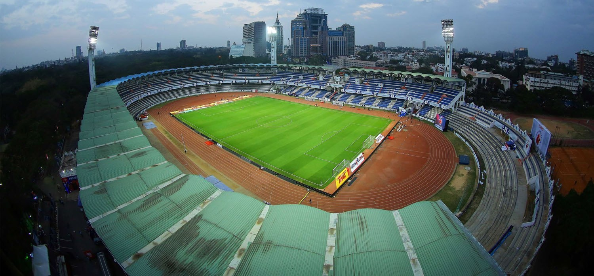
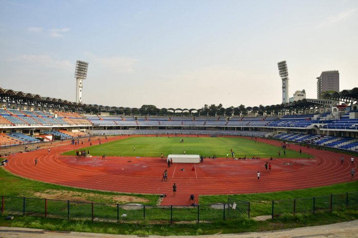
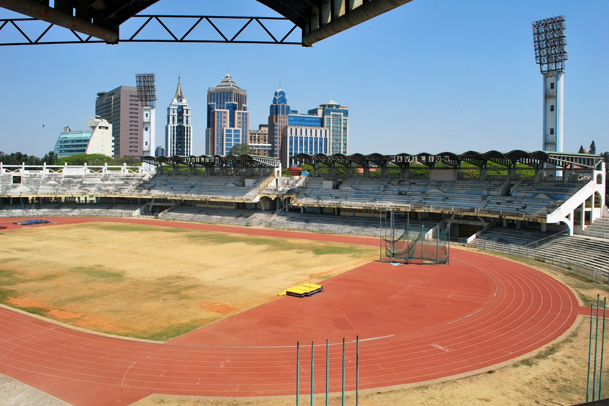

Kanteerva Outdoor Stadium

Overview
Few buildings in Bangalore are as closely tied to the city's sporting life as the Kanteerva outdoor stadium. We designed it in the early 1990s, soon after Mallya Aditi International School, and it opened in 1997, when Bangalore hosted the National Games. It remains one of the best-known projects in our history. Set on a site of seven to eight acres in the heart of the city, with a built-up area of around one lakh square feet and seating for around 25,000 spectators, it has become Karnataka's premier venue for athletics.
A stadium has to serve two very different audiences at once: the athletes on the field and the crowds in the stands. Athletes need a track and field built to exacting standards, with good access to changing rooms, warm-up areas and the arena. Spectators need clear sightlines, shelter from sun and rain, and routes that let tens of thousands of people arrive, find their seats and leave again safely. Resolving all of this at the scale of a city venue was the central challenge of the design.
The stadium was one of the first buildings in Bangalore to use slip form construction. In slip forming, concrete is poured into formwork that rises continuously as the structure is built, so tall, uniform concrete elements can be cast quickly and without joints. At the time it was a new and ambitious technique for the city, and adopting it let us build elements that would have been slow and difficult to achieve by conventional means. It reflected a willingness, shared by client and builders, to bring new technology to a major public project.
Two features give the stadium its identity. The first is its butterfly arches — sweeping structural elements that support the roof over the stands and give the stadium a light, dynamic profile against the sky. They provide structure and shelter, but they also make the stadium recognisable, an image that has become part of the city's visual memory. The second is the floodlighting towers, also built using slip form construction. Tall and slender, they give even, high-quality illumination for evening events, so competitions can continue after dark, while their clean form complements the rest of the structure.
The stands and circulation were resolved with equal care. Seating is arranged to give spectators good views of the track and field from every part of the stadium, and entrances, concourses and stairways are planned to move large crowds efficiently on major event days.
Kanteerva was drawn entirely by hand. When we marked fifty years of Kumar & Swamy Architects, some of its original hand-drafted working drawings were among those we put on display — a reminder of the craft and precision that went into it.
Since its completion, Kanteerva has hosted many of Karnataka's most significant athletics meets and sporting events, and it has become a cornerstone of the state's sporting infrastructure. Generations of athletes have trained and competed there, and countless spectators have watched from its stands. For us it remains a source of great pride: a building that has served its city for decades, and that still stands as a symbol of sporting excellence in the region.
Architects — Kumar & Swamy Architects, Bangalore





Planning a school or campus?
Tell us about your institution — a new campus, an extension, a master plan or a renovation. Every project starts with a conversation.